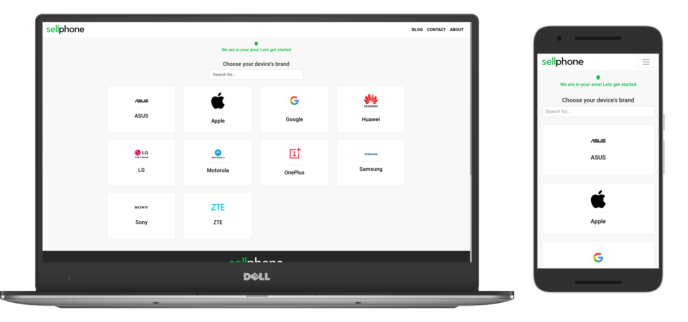
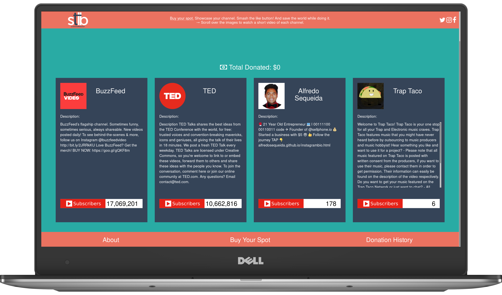
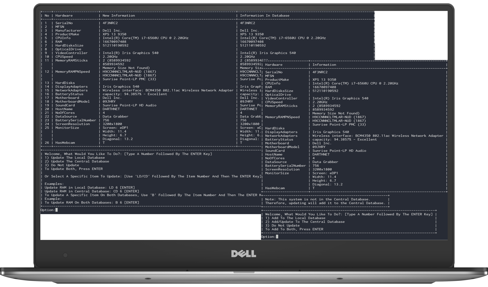
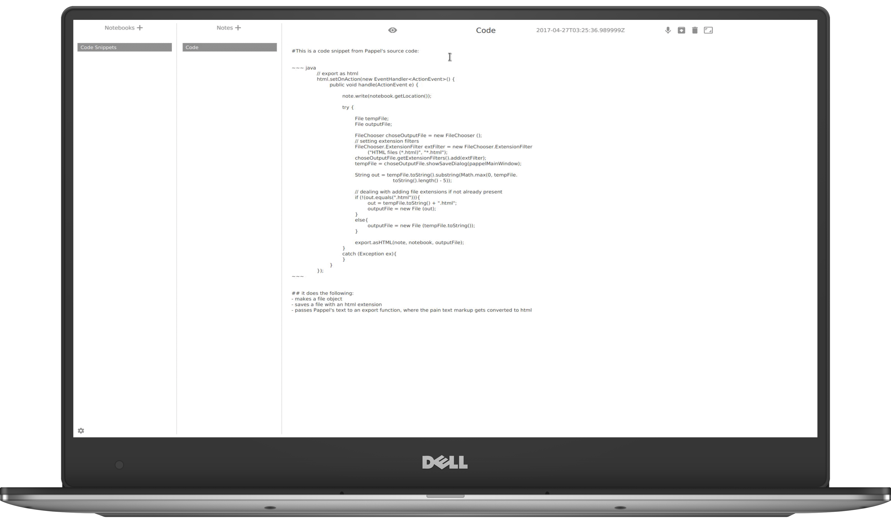

Software Developer.
Student.
Entrepreneur.
With an entrepreneur spirit and a passion and belief for open source software, I am that person that is always looking for the next big project to make come to life in order to provide others with functional solutions.

Sellphone is a website that I made that allows people to sell their old phones. It is an on demand pickup service covering Los Angeles County, Orange County, and the Inland Empire. It was created as a way for me to lean both the making of a full fledged
website with both a fronted and back end system as well as a way for me to learn more about how a business handles customer service as as well as expansion. Stack: Python, Django, Jinja, Sqlite3, HTML, CSS, Bootstrap, JavaScript Graphics:
Inkscape API: unsplash.com

This website was my first attempt at self taught website creation and web design. It was created after taking an environmental science class where the professor told us that there was not much we could do as individuals on a large scale regarding world
problems. I took this to heart and thought, "Why not?". So I made this website that was a way for people to promote their YouTube Channels modeled after http://www.milliondollarhomepage.com/ - an old website that really highlights the advertising
power of the internet. The intention was to give away profits at the end of the month to a different charity. Stack: Python, Django, Jinja, Sqlite3, HTML, CSS, Bootstrap, JavaScript Graphics: Gimp. API: Stripe

This is a page I completed along with another developer for my internship at Sound Drill. The page is a launch page intended to take user emails and store them using MailChimp for later mass distribution of email messages to subscribers. The page is decorated
using css and features a video background. This project also consisted of deploying and managing an AWS instance through ssh and the AWS portal. Furthermore, I got to learn how to redirect a GoDaddy domain to the AWS server where the page
was hosted. Stack: HTML, CSS, JavaScript, Bower, Bootstrap, Git, Github

Data Grabber is a tool I developed as freelance work for All Green Recycling while trying to gain more experience working in my filed as a professional. The tool is intended as a way to quickly grab hardware information from a variety of computers with
the help of the Linux kernel. The program runs from a persistent live Linux Mint installation on a usb drive, which was also configured by me. The operating system is also configured for the automatic connection of wireless networks made to
work on an array of wireless cards. Stack: Python, terminaltables, python-mysql-connector, python-ElementTree

An open source modular note taking platform that I created after frustration of not being able to find any native Linux applications that fit my needs when taking notes for class rapidly and effectively. It is catered to power users and individuals alike.
Stack: Java, JavaScript, Bash, PhantomJS, PrismJS Markdown4j, DropBox API, Controlsfx